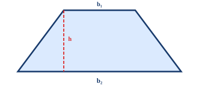
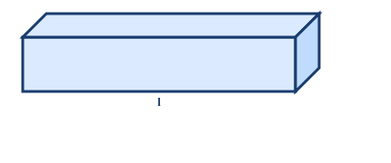
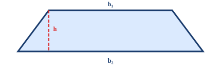

LF Academy · LF Academy
小五 · 第 36 堂 · Student Edition Handout
SSPA 專項 — 幾何題滿分衝刺
T4 Area + T5 Volume/幾何 · 兩大幾何Trap總攻 · 75 min · 1-on-3 Online Lesson
Textbook Reference： 呈分試卷一 + 卷二幾何題（佔卷約 25-35%）· Area · Volume · 組合圖形核心Trap： 🪤 T4 Area公式Trap · T5 幾何/VolumeTrap — 🔴 SSPA 必考 SSPA 關聯： 🔴 高頻 呈分試幾何題平均失分率 40%，公式混淆是第一大殺手Prerequisites： L3–L6 Area（Parallelogram · Triangle · Trapezoid · 多邊形）Lesson Objectives： ❶ Area公式肌肉記憶 ❷ Volume計算零混淆 ❸ 組合圖形分割策略 ❹ 單位換算無誤
Student Name：
Class：
Date：
Duration：
一、幾何熱身（共 5 題，5 min）
🏆 SSPA衝刺·限時挑戰
模擬真實SSPA考試！限時作答，每題計分。答對率達80%解鎖「SSPA戰士」勳章！
⚡ 開始模擬考 →
# Question Difficulty Answer Area W1 寫出ParallelogramArea公式。 🌱 W2 寫出TriangleArea公式。 🌱 W3 寫出TrapezoidArea公式。 🌱 W4 Rectangle長 8 cm，闊 5 cm。Area = ？Perimeter = ？ 🌱 W5 Square邊長 6 cm。Area = ？Perimeter = ？ 🌱
📐 幾何圖形快速參考（本堂所有Question共用）
Rectangle A=l×w
l w P=2(l+w)
Trapezoid A=½(a+b)h
h b₂ b₁ b₁=上底·b₂=下底
Circle A=πr²·C=2πr
O r d=2r π≈3.14 或 22/7
⚠️ SSPA 幾何題最Common Mistake：① 混淆Area公式和Perimeter公式 ② 忘記÷2（Triangle/Trapezoid）③ 高必須是垂直距離 ④ 單位寫錯（cm² vs cm）
二、Core Knowledge + Worked Examples
知識點一：AreaTrap總攻（T4 Area公式）🔴 SSPA 必考
五大Area公式（必須肌肉記憶！）： 高 （高是垂直距離，不是斜邊！）÷ 2 （÷2 最容易忘記！）(上底 + 下底) × 高 ÷ 2 （不是「加高乘2」！）單位Trap： Area單位是 cm²/m²，不是 cm/m！答案必須寫平方單位！
圖一：TrapezoidArea = (上底 + 下底) × 高 ÷ 2

例題 KP1-1：TrapezoidArea公式Trap
Trapezoid上底 6 cm，下底 10 cm，高 4 cm。Area = ？
❌ Common Mistake
(6+10+4) ÷ 2 = 10 cm²
加了高進去！公式是 (上底+下底)×高÷2
✅ 正確解法
(6+10)×4÷2 = 32 cm²
先加兩底 = 16，×高 = 64，÷2 = 32
例題 KP1-2：Parallelogram高 vs 斜邊
Parallelogram底 8 cm，高 5 cm，斜邊 6 cm。Area = ？
❌ Common Mistake
8 × 6 = 48 cm²
用了斜邊！ParallelogramArea = 底×高（垂直距離）
✅ 正確解法
8 × 5 = 40 cm²
高 = 垂直距離 = 5 cm，不是斜邊 6 cm
🧠 Mnemonic：「平四底乘高、三角要除二、Trapezoid兩底加乘高除二、斜邊係Trap」
⚠️ T4 最高頻三大錯誤：(1) Triangle忘記 ÷2 (2) Parallelogram用斜邊 (3) Trapezoid公式記成 (上底+下底+高)×2
KP1 同步練習 — Area計算（第 1-15 題）
# Question Difficulty Answer Area 1 Parallelogram底 12 cm，高 7 cm。Area = ？ 🌱 2 Triangle底 10 cm，高 6 cm。Area = ？（你有除以 2 嗎？） 🌱 3 Trapezoid上底 5 cm，下底 9 cm，高 6 cm。Area = ？ 🌱 4 Rectangle長 15 cm，闊 8 cm。Area = ？Perimeter = ？ 🌱 5 Square邊長 9 cm。Area = ？ 🌱 6 Parallelogram底 20 cm，高 8 cm，斜邊 10 cm。Area = ？ 🌿 7 Triangle底 14 cm，高 9 cm。Area = ？ 🌿 8 Trapezoid上底 7 cm，下底 13 cm，高 5 cm。Area = ？ 🌿 9 Parallelogram底 3.5 cm，高 2 cm。Area = ？ 🌿 10 TriangleArea是 24 cm²，底是 8 cm。高是多少？ 🌳 11 TrapezoidArea是 40 cm²，上底 5 cm，下底 11 cm。高是多少？ 🌳 12 一個Parallelogram和一個Triangle有相同的底和高。TriangleArea是 18 cm²。ParallelogramArea = ？ 🌳 13 Triangle底 16 cm，高是底的一半。Area = ？ 🌳 14 ParallelogramArea 72 cm²，高 8 cm。底 = ？（注意：不是斜邊！） 🌳 15 兩個完全相同的Trapezoid拼成一個Parallelogram。每個Trapezoid上底 4 cm，下底 10 cm，高 6 cm。拼成的ParallelogramArea = ？ 🌳
知識點二：VolumeTrap總攻（T5 幾何/Volume）🔴 SSPA 必考
Volume核心公式與Trap： 單位Trap ：Volume單位是 cm³/m³（立方），不是 cm²（平方）！容量換算 ：1 cm³ = 1 mL，1000 cm³ = 1 L表Area vs Volume混淆 ：表Area = 所有面的Area之和（單位 cm²），Volume = 長×闊×高（單位 cm³）
圖二：長方體Volume = 長 × 闊 × 高（單位：cm³）

例題 KP2-1：Volume vs 表Area混淆
一個長方體長 5 cm，闊 4 cm，高 3 cm。求 (a) Volume (b) 表Area。
❌ Common Mistake
Volume = 表Area = 5×4=20
混淆Volume和表Area，且單位搞錯
✅ 正確解法
Volume = 5×4×3 = 60 cm³
Volume是立方(×3次)，表Area是六面Area和
例題 KP2-2：容量換算Trap
一個水箱長 20 cm，闊 15 cm，高 10 cm。可裝水多少升？
❌ Common Mistake
20×15×10 = 3000 L
3000 cm³ ≠ 3000 L！1 L = 1000 cm³
✅ 正確解法
Volume = 20×15×10 = 3000 cm³
cm³ 轉 L 要 ÷1000
⚠️ T5 必記：1 cm³ = 1 mL，1000 cm³ = 1 L。Volume單位是「立方」不是「平方」！
KP2 同步練習 — Volume與表Area（第 16-28 題）
# Question Difficulty Answer Area 16 長方體長 6 cm，闊 4 cm，高 2 cm。Volume = ？ 🌱 17 正方體邊長 5 cm。Volume = ？ 🌱 18 長方體長 10 cm，闊 5 cm，高 3 cm。(a) Volume = ？(b) 表Area = ？ 🌿 19 水箱內部長 30 cm，闊 20 cm，水深 15 cm。水的Volume = ？多少升？ 🌿 20 正方體表Area是 150 cm²。邊長 = ？Volume = ？ 🌳 21 一個長方體Volume是 240 cm³，長 10 cm，闊 6 cm。高 = ？ 🌿 22 一個魚缸長 40 cm，闊 25 cm，高 30 cm。可裝水多少升？（1 L = 1000 cm³） 🌿 23 正方體邊長 8 cm。表Area = ？Volume = ？（注意單位不同！） 🌿 24 一個長方體所有邊長總和是 48 cm。長 6 cm，闊 4 cm。高 = ？Volume = ？ 🌳 25 一個正方體的Volume是 512 cm³。邊長 = ？表Area = ？ 🌳 26 水箱原有水 5 L。放入一塊石頭後，水位上升，Volume變成 5.8 L。石頭的Volume是多少 cm³？ 🌳 27 長方體長 8 cm，闊是長的一半，高是闊的 2 倍。Volume = ？ 🏔️ 28 把一個邊長 10 cm 的正方體切成 8 個相同的小正方體。每個小正方體的Volume = ？邊長 = ？ 🏔️
知識點三：組合圖形策略（T4 + T5 綜合）🔴 SSPA 必考
組合圖形解題三步法： 分割 ：把組合圖形拆成基本圖形（Rectangle、Triangle、Trapezoid、Parallelogram）標尺寸 ：每個基本圖形標出所需的底、高、長、闊（注意有些尺寸需要計算得出）分別計算再合併 ：加（合併圖形）、減（挖空圖形）Volume組合 ：同樣先分割為多個長方體/正方體，分別求Volume再相加重疊Trap ：兩個圖形有重疊部分時，不要重複計算！
圖三：組合圖形 = Rectangle + Triangle（分割法）

例題 KP3-1：組合圖形Area（參照圖三）
求圖三中組合圖形的總Area。Rectangle 12×8，Triangle底 10 高 6。
❌ Common Mistake
12×8 + 10×6 = 96+60 = 156 cm²
Triangle忘記 ÷2！
✅ 正確解法
A = 12×8 = 96 cm²
每個基本圖形各自用正確公式
例題 KP3-2：組合Volume（兩個長方體疊加）
一個 L 形物體由兩個長方體組成：下方長方體 10×5×4 cm，上方長方體 6×5×3 cm 疊在下方一端。總Volume = ？
❌ Common Mistake
10×5×4 + 6×5×3 = 200+90 = 290 cm³
看似正確，但若兩個長方體有重疊部分就需要減去
✅ 正確解法
V₁ = 10×5×4 = 200 cm³
分別算Volume，確認無重疊後相加
⚠️ 組合圖形最高頻錯誤：(1) Triangle忘記 ÷2 (2) 忘記計算「隱藏尺寸」 (3) 重疊部分重複計算
KP3 同步練習 — 組合圖形（第 29-40 題）
# Question Difficulty Answer Area 29 一個組合圖形由Rectangle (8×5 cm) 和Triangle (底 8 cm，高 4 cm) 組成。總Area = ？ 🌿 30 Rectangle (10×6 cm) 中挖去一個Triangle (底 6 cm，高 4 cm)。餘下Area = ？ 🌿 31 一個Trapezoid (上底 4 cm，下底 10 cm，高 6 cm) 上方有一個Triangle (底 10 cm，高 3 cm)。總Area = ？ 🌳 32 兩個相同的Parallelogram (底 8 cm，高 5 cm) 拼在一起，重疊了一個Triangle (底 8 cm，高 2.5 cm)。總Area = ？ 🌳 33 一個 L 形平面由兩個Rectangle組成：豎的 12×4 cm，橫的 8×5 cm。它們重疊了一個 4×4 cm 的Square。總Area = ？ 🏔️ 34 10x5x2 10x5x2 10x5x2 3級樓梯
一個樓Trapezoid3D Solid由 3 級組成。每級長 10 cm，闊 5 cm，高 2 cm。三級疊成階梯。總Volume = ？🌳 35 Rectangle (15×10 cm) 中剪去一個Trapezoid (上底 4 cm，下底 8 cm，高 5 cm)。餘下Area = ？ 🌳 36 一個大長方體 (10×8×6 cm) 中挖去一個小長方體 (4×3×2 cm)。餘下Volume = ？ 🌳 37 一個Square邊長 10 cm，對角線切開成兩個Triangle。每個TriangleArea = ？ 🌿 38 兩個完全相同的Trapezoid (上底 3 cm，下底 7 cm，高 4 cm) 以「下底對下底」拼成一個六邊形。總Area = ？ 🌳 39 一個Rectangle公園 50 m × 30 m。中間有一條 2 m 闊的直路貫穿長邊。可使用的草地Area = ？ 🏔️ 40 正方體邊長 6 cm，表面塗滿顏料後切成 27 個邊長 2 cm 的小正方體。有幾多個小正方體是「一面有顏料」的？ 🏔️
三、幾何終極衝刺（第 41-45 題 · 🚀 狀元級挑戰）
# Question Difficulty Answer Area 41 一個六邊形可以分割成一個Rectangle (8×6 cm) 和兩個相同的Triangle（各底 4 cm，高 6 cm）。六邊形Area = ？ 🌳 42 正方體邊長增加一倍，Volume變為原來的多少倍？表Area變為多少倍？ 🏔️ 43 一個Rectangle和一個Parallelogram等底等高（底 12 cm，高 5 cm）。兩個圖形的Area相差多少？為什麼？ 🏔️ 44 20x10x8 (底層) 正方體 4x4x4
一個組合3D Solid：下面是一個長方體 (20×10×8 cm)，上面中央有一個正方體 (邊長 4 cm)。總Volume = ？表Area = ？（注意：接合面不算表Area）🏔️ 45 把一個不規則圖形畫在方格紙上（每格 1 cm²）。完整格有 24 格，半格及大半格約有 8 格。EstimationArea = ？寫出你的Estimation方法。 🏔️
四、Area公式速查表
圖形 Area公式 最Common Mistake Square 邊長 × 邊長 與Perimeter混淆 Rectangle 長 × 闊 與Perimeter混淆 Parallelogram 底 × 高 用斜邊當高 Triangle 底 × 高 ÷ 2 忘記 ÷2 Trapezoid (上底+下底) × 高 ÷ 2 加了高進去 / 忘記 ÷2
五、Common Error Summary
🎯 Learning Objectives Review — 完成本堂後你應該能夠：
☐ 辨認本堂所有Trap類型
☐ 獨立解答🌱基礎題（100%正確）
☐ 挑戰🌿進階題（80%+正確）
☐ 向同學解釋本堂Mnemonic
# Common Error Trap Correct Approach 1 TriangleArea忘記 ÷2 T4 記住：底×高是Parallelogram，Triangle只要一半 2 Parallelogram用了斜邊 T4 高必須是垂直距離，斜邊一定是干擾項 3 Trapezoid公式加高進去 T4 公式是 (上+下)×高÷2，不是 (上+下+高)×2 4 Area vs Perimeter混淆 T4 Perimeter = 邊長和（cm），Area = 公式計算（cm²） 5 Volume vs 表Area混淆 T5 Volume = cm³（佔空間），表Area = cm²（六面Area和） 6 容量換算錯誤 T5 1 cm³ = 1 mL，1000 cm³ = 1 L，必須 ÷1000 7 組合圖形重疊重複計算 T4/T5 分割後檢查有無重疊，有重疊必須減去一次 8 Area/Volume單位寫錯 T4/T5 Area必寫 cm²/m²，Volume必寫 cm³/m³ 9 隱藏尺寸未計算 T4/T5 有些尺寸不直接給出，需從其他已知尺寸推算
呈分試幾何題滿分策略 🔴 必讀
幾何題三步驗證法： 公式檢查 ：寫出公式 → 代入數字 → 確認 ÷2 / 不÷2單位檢查 ：Area → cm²/m²，Volume → cm³/m³，長度 → cm/m合理性檢查 ：例如TriangleArea < 同底同高的ParallelogramArea？TrapezoidArea合理嗎？
🧠 幾何滿分Mnemonic：「Area背公式、三角要除二、平四用高唔用斜、Volume係立方、單位要睇清」
🪤 LF Academy · LF Academy · We don't teach math — we teach trap avoidance.。 · LF-P5-下-L36 v6 · SSPA 幾何題滿分衝刺